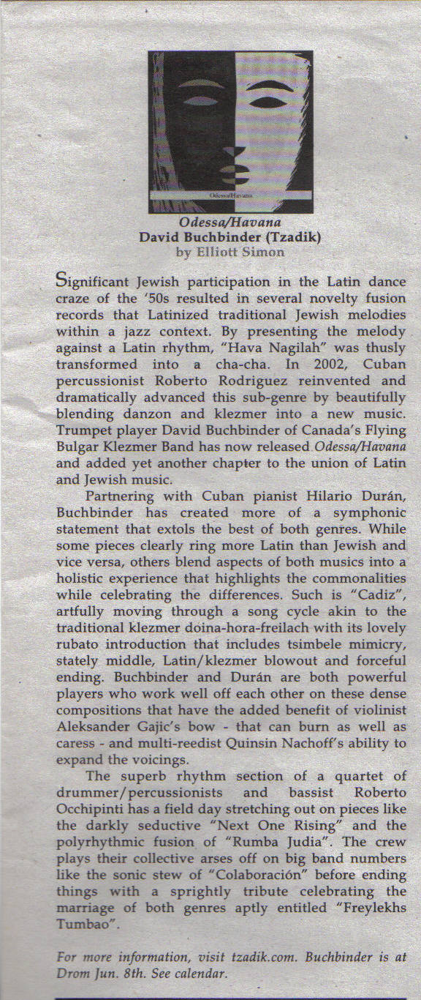

violin, viola, composer
"In Hotland, by Aleksandar Gajić, our cellist begins the piece by using his instrument as a drum, creating a base for its stark drones to build.
The wonderful cry of its double stopped melody moved hypnotically through what amounted to two chords and the truth.
A folk song in hyperspace? This work does exactly the same thing for Serbian folk what Led Zeppelin did for the blues."
-Robert Bondurant, 'Fire in the Hole!'
